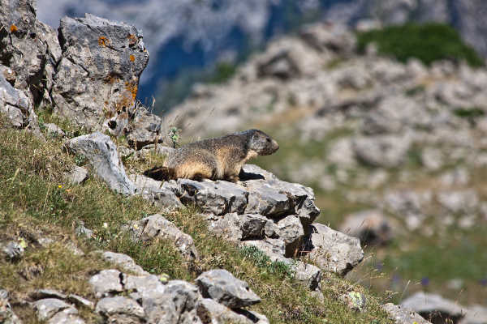
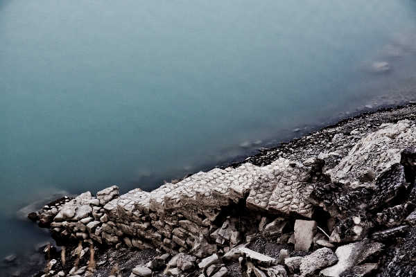

Pingüino Mecánico
Foto-Video-Web
En 2015 un grupo de frikis que formaban una cuadrilla fueron despedidos por unos desfalcos que no habían cometido. No tardaron en fugarse de la situación en la que se encontraban recluídos. Hoy, deseados todavía por muchas empresas, sobreviven como informáticos de fortuna.
Si tiene una necesidad digital y nos contacta, quizá pueda contratarnos.
Nuestros servicios son:
Si tiene una necesidad digital y nos contacta, quizá pueda contratarnos.
Nuestros servicios son:
- Fotografía social, arquitectónica, de paisaje, de naturaleza, de mascotas, de producto y todo lo que se pueda imaginar.
- Producción y edición de vídeo tanto para uso comercial como privado.
- Diseño y programación web personalizada y con las últimas técnicas.


